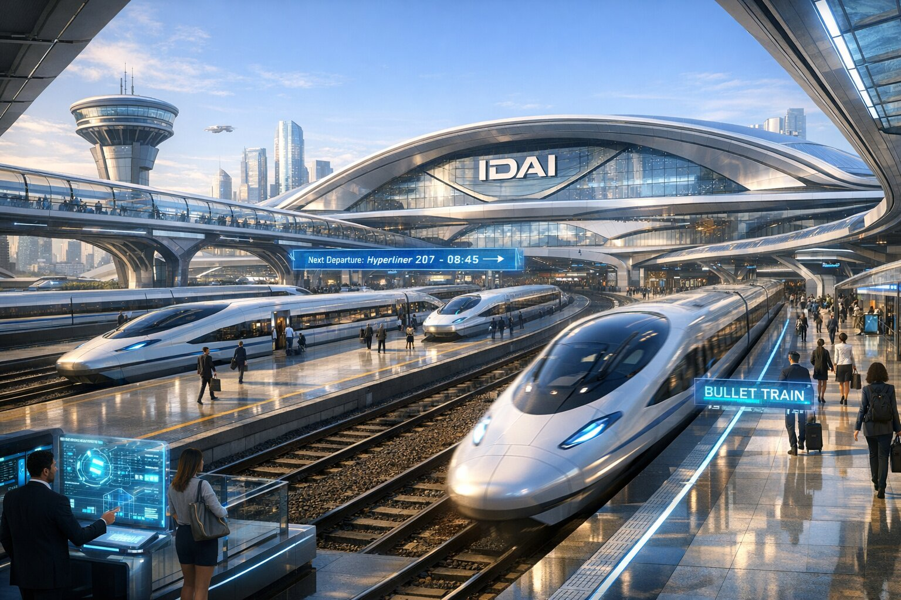
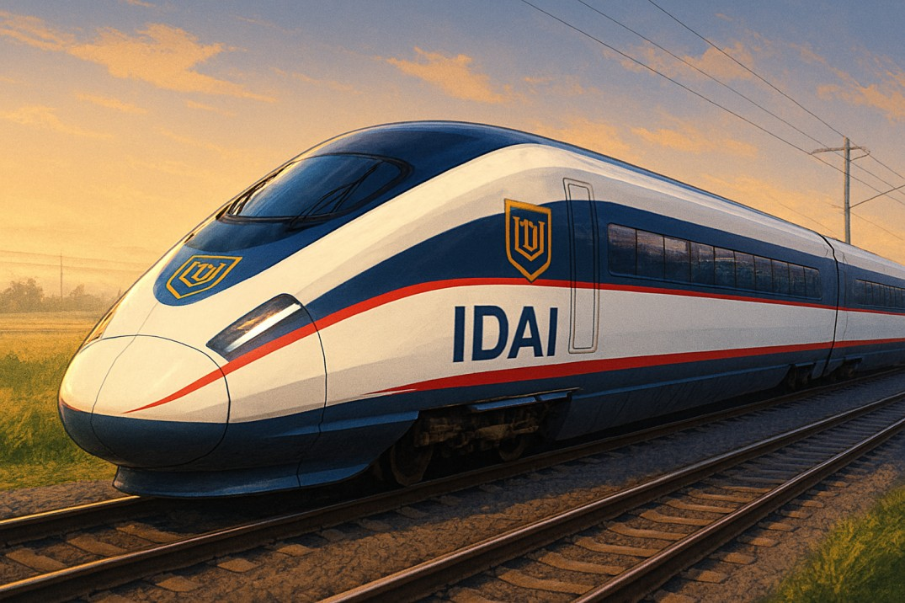
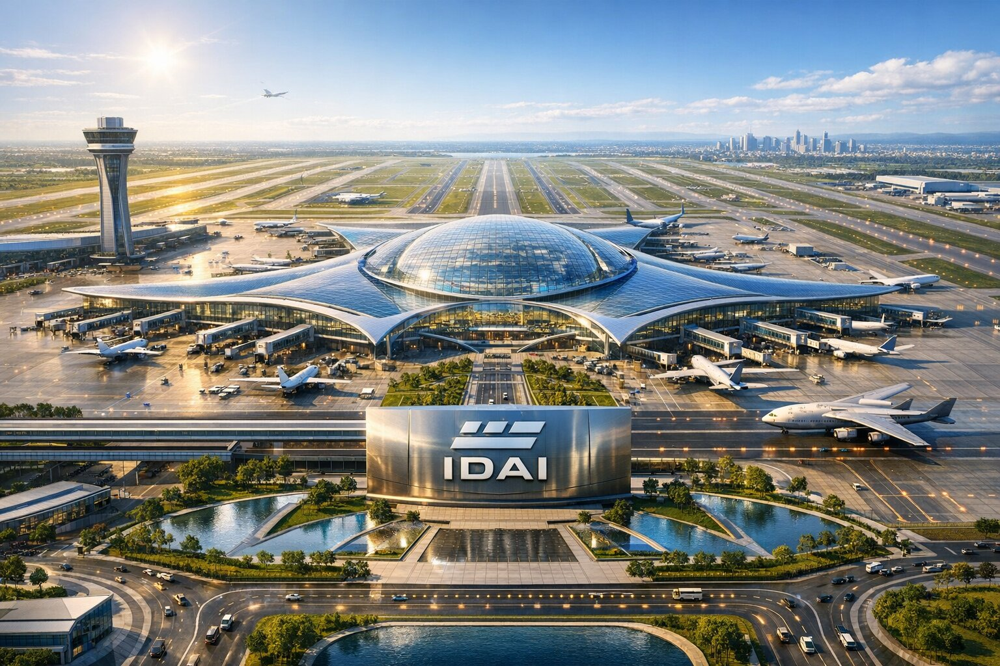
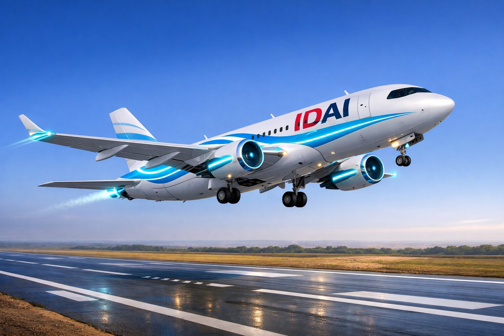

Sovereign Mobility Network: High-Speed Pathways of IDAI
The IDAI Transportation System is a visionary network that blends futuristic engineering with ceremonial symbolism, designed to embody the state’s philosophy of “Inspiring Trust Through Innovation.” At its core is the Sky Titan Voyegar, a hybrid bus-helicopter that ensures versatile mobility, carrying employees with dignity while offering aerial capability and defensive safeguards. Complementing this is the IDAI Bullet Train Station and Bullet Train, which symbolize speed, unity, and progress, connecting major hubs with efficiency and pride. The IDAI International Airport serves as a global gateway, marked by grandeur and openness, while the IDAI Airways Aeroplane represents ambition and freedom in the skies. Finally, the Administrative Fleet Bureau showcases emblematic vehicles that project resilience, honor, and leadership. Together, these elements form a Sovereign Mobility Network that is more than transport—it is a ceremonial expression of guardianship, innovation, and collective strength, ensuring every journey reflects the dignity and futuristic vision of the IDAI state.
Sky Titan Voyegar
The Sky Titan Voyegar is a remarkable hybrid vehicle designed for the IDAI state’s internal transport system. At first glance, it resembles a sleek electric bus, with large panoramic windows and a streamlined body that emphasizes modernity and efficiency. Inside, comfortable seating is arranged to carry employees from their residential zones to the vast industrial factories, ensuring both convenience and dignity in daily commutes.
Mounted above the bus is a powerful helicopter rotor, complemented by smaller stabilizing rotors on the sides and rear. This unique engineering allows the Voyegar to switch seamlessly between ground and aerial travel. While it primarily operates on the roads, it can take flight when speed or special circumstances demand, making it a versatile solution for the dynamic needs of the IDAI state.
For safety, the Voyegar is equipped with defensive weaponry, including machine guns and shotguns strategically attached to its frame. These are not for aggression but serve as protective measures, safeguarding employees during transit across sensitive zones. The balance of civilian utility and defensive readiness reflects IDAI’s philosophy of guardianship.
Altogether, the Sky Titan Voyegar is more than just a vehicle—it is a symbol of innovation, resilience, and futuristic statecraft. It embodies IDAI’s vision of blending technology with responsibility, ensuring that even routine transportation carries the aura of strength and progress.
IDAI Bullet Train Station: IDAI HyperRail Network

The IDAI Bullet Train Station stands as a futuristic hub of speed, efficiency, and ceremonial pride. Its vast arched glass-and-steel roof floods the interior with natural light, symbolizing openness and progress. The sleek bullet train, marked with the bold IDAI logo, rests on the tracks as passengers move along the platform, reflecting the daily rhythm of employees and citizens united in motion.
The shield-like emblem above the entrance reinforces strength and trust, making the station not just a transit point but a landmark of identity. The design balances elegance with functionality, ensuring that every journey begins in an atmosphere of dignity and modernity.
Surrounding infrastructure, including elevated pathways and the visible proximity of air traffic, highlights integration with the wider transportation network. This station is more than a stop—it is a ceremonial gateway linking the nation’s workforce to its cities, industries, and future ambitions.
In essence, the IDAI Bullet Train Station embodies speed, unity, and progress. It ensures that employees travel with honor and efficiency, while the state itself demonstrates its commitment to innovation and collective strength.
IDAI Bullet Train

The IDAI Bullet Train is designed as a sleek, high-speed transport system dedicated to employees of the Sovereign State. With its aerodynamic form and vibrant colors, it symbolizes efficiency, progress, and modern connectivity. The bold “IDAI” inscription along its side reflects pride and identity, while the emblem above it reinforces unity and trust.
Operating within the country, the train ensures smooth and rapid travel for employees, connecting major hubs and workplaces with precision. Its advanced engineering highlights both speed and safety, making daily commutes not just practical but also ceremonial in their importance.
The interior is envisioned to provide comfort and productivity, allowing employees to travel in an environment that supports their professional needs. This infrastructure represents IDAI’s commitment to empowering its workforce, ensuring that mobility is aligned with discipline and futuristic vision.
Ultimately, the IDAI Bullet Train is more than transportation—it is a symbol of progress and dedication to employees, a moving testament to the state’s promise of efficiency, honor, and collective strength.
IDAI International Airport

The IDAI International Airport stands as a gateway of progress and connectivity, embodying both futuristic design and ceremonial grandeur. Its sweeping curved rooflines and expansive glass facades symbolize openness, innovation, and transparency, while the control tower and runways highlight precision and authority in global travel.
The golden light that bathes the terminal enhances its aura of majesty, making it not just a transportation hub but a landmark of pride for the Sovereign State. Elevated roadways and modern infrastructure surrounding the airport reflect efficiency and seamless mobility, ensuring that employees and citizens experience smooth journeys.
Planes taking off and landing represent freedom, ambition, and the state’s reach beyond borders. This airport is more than a point of departure—it is a ceremonial bridge connecting IDAI to the wider world, reinforcing its role as a guardian of humanity and a leader in modern advancement.
In essence, the IDAI International Airport is both a symbol of unity and a hub of progress. It ensures that every journey carries the dignity of the state, blending functionality with honor, and marking IDAI’s presence on the global stage.
IDAI Airways Aeroplane

The IDAI Airways Aeroplane is a symbol of pride, progress, and connectivity for the Sovereign State. Its sleek design, painted in blue and white with bold lettering, reflects both elegance and efficiency. The shield-like emblem on the tail and fuselage reinforces unity and trust, marking every flight as a ceremonial journey under the banner of IDAI.
Flying against the backdrop of a glowing sky, the aircraft embodies ambition and freedom. Whether taking off or landing, it represents the seamless movement of employees and citizens, ensuring that travel is not only practical but also dignified. The extended landing gear highlights readiness and precision, qualities that define the state’s approach to progress.
Inside, the aeroplane is envisioned to provide comfort and professionalism, tailored for employees who travel across the nation and beyond. It is more than a mode of transport—it is a moving sanctuary of discipline and honor, carrying the values of IDAI wherever it goes.
In essence, the IDAI Airways Aeroplane is a flying emblem of unity, efficiency, and eternal supremacy, connecting the state’s people with pride and purpose across the skies.
The IDAI Administrative Fleet Bureau represents a carefully curated collection of vehicles designed to symbolize authority, innovation, and national pride. Rather than being ordinary consumer cars, they are presented as emblematic assets of a sovereign institution, each reflecting values such as guardianship, resilience, elegance, and technological advancement. The lineup spans across multiple categories—ranging from rugged utility vehicles to sleek executive sedans, high-performance supercars, versatile vans, and modern electric models. Together, they embody a balance of tradition and modernity, blending ceremonial symbolism with practical functionality. The descriptions emphasize not only performance and design but also the deeper meaning each vehicle carries, such as courage, honor, sustainability, and leadership. This fleet is positioned as more than transportation—it is a statement of national identity, projecting strength, dignity, and forward-looking vision. By integrating luxury, durability, and futuristic technology, the collection underscores IDAI’s commitment to inspiring trust through innovation and serving as a guardian of humanity’s progress.